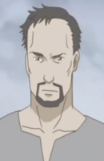
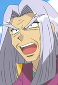

|
Brian Roscoe |
|
Brian Roscoe is a famous magician who Kujou regularly encounters. He is a descendant of Gray Wolves, and is the person responsible for the supply of electricity to their secluded town. He has a blunt personality when referring to Victorique as a "tool." Brian cares deeply for Cordelia Gato and wants to protecther. |
|  |
Giovanni |
|
Giovanni is aminor who looks after Romeo during his stay at the mines. He is a man who support Romeo when he at the mine. |
 |
Roy Mustang |
- Fullmetal Alchemist
- Fullmetal Alchemist: The Conqueror of Shamballa
- Fullmetal Alchemist: Reflections
- Fullmetal Alchemist: Premium Collection
|
Roy Mustang is a colonol for the military and an alchemist. His nickname is Flame Alchemist because he has the ability to control fire. Being arrogant and manipulative, Mustang is intelligent and always one step ahead of his opponents. |
 |
Spirit Albarn |
|
Spirit Albarn is one of Death's weapon and Maka Albarn's father. He is a womanizer and very protective of this daughter. He loves Maka more than anything and extremely sad when his daughter hates him. |
|  |
Sullivan |
- Pokemon Advanced Generations
|
Sullivan is a Pokemon Trainer who is good at fishing. He is a self-proclaimed by himself a "fishing god." His own goal is to capture a Whiscash named Nero. He has an extensive collection of fishing lures and rods. |
 |
Yoshiyuki Miyazono |
- Your Lie in April
- Your Lie in April OVA
|
Yoshiyuki Miyazono is Kaori Miyazono's father. He runs a bakery and is a supportive of his daughter's decisions. |